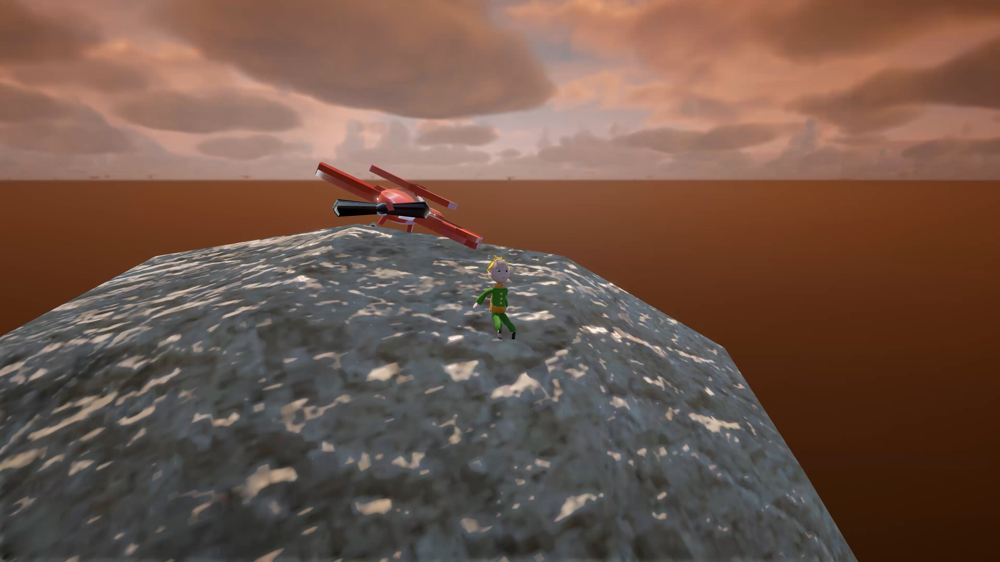
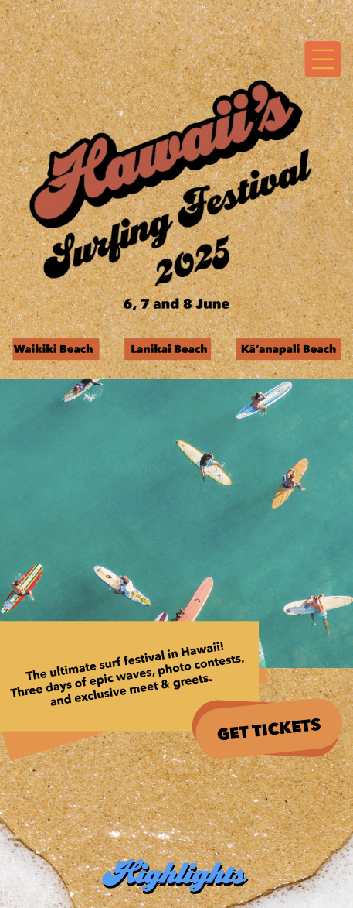
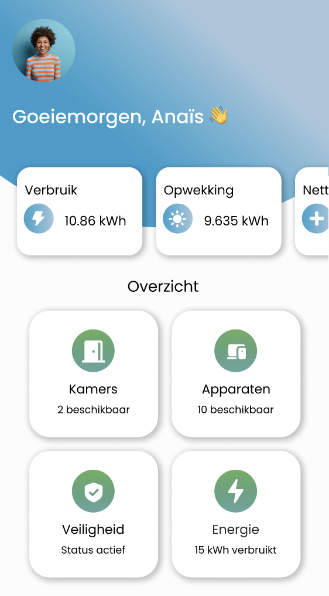

Mijn projecten
3D & Animation

Le Petit Prince
UI/UX Design

Surf Festival
UI/UX Design

Hoi! Ik ben Kenza, een gepassioneerde student Multimedia & Creatieve Technologie. Ik hou van 3D-modelling, design en het verkennen van nieuwe technologieën. Met creativiteit en technische vaardigheden werk ik aan projecten die me uitdagen en mijn grenzen verleggen.


